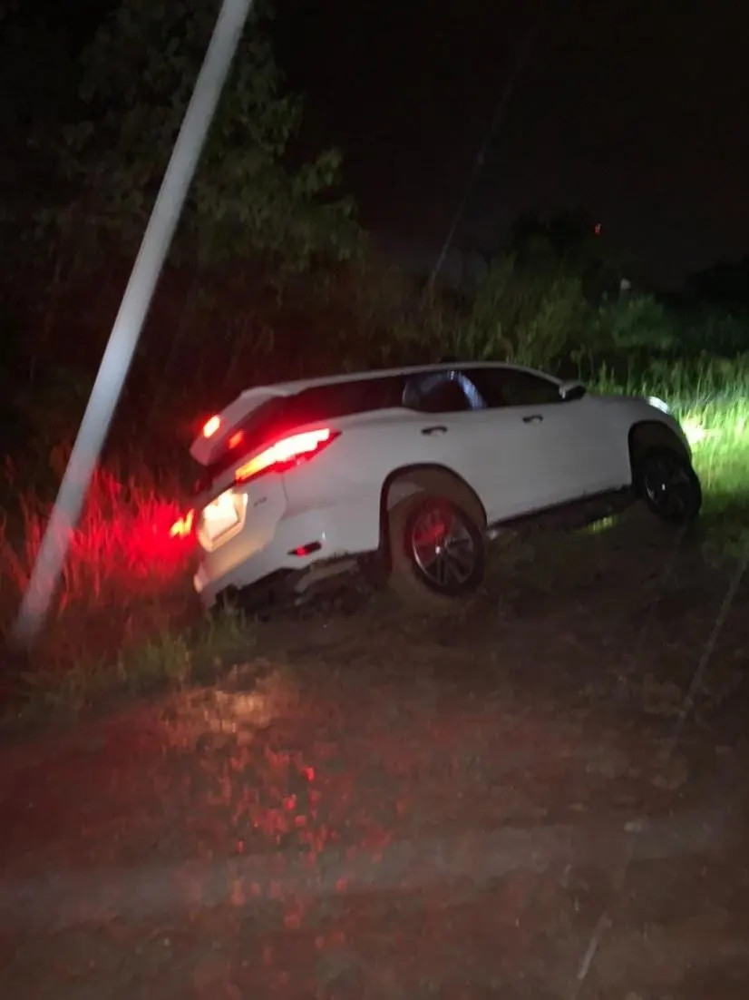

Diario de un Robot · 3 de febrero de 2021February 3, 2021 · Serie: Anecdotario
Anecdotario 06: Buceo, volcada y trabajo
“Tournesol : Capitaine !… Capitaine !… Le bateau avance !… Haddock : Eh bien, que voulez-vous qu’il fasse ?… Qu’il danse le menuet ?…” — Le Trésor de Rackham le Rouge, Hergé
This essay is only available in Spanish for now.

“Tournesol : Capitaine !… Capitaine !… Le bateau avance !…
Haddock : Eh bien, que voulez-vous qu’il fasse ?… Qu’il danse le menuet ?…”
— Le Trésor de Rackham le Rouge, Hergé
Pasado
La primera vez que respiré bajo el agua tenía menos de diez años y al menos más de ocho. Cuántos exactamente no me acuerdo; la primaria es una época con golpes de amnesia y dolores escondidos detrás de las puertas del olvido. Estaba en una playa en Brasil, en Búzios, la gente se amontonaba entre arena, toallas y sombrillas. Un remolino de pieles bronceadas y cuerpos al sol como reptiles en las rocas. El aire salado no tenía un resquicio libre entre el ruido de lanchas, motos de agua, cuatriciclos, los gritos de los vendedores ambulantes y las charlas exageradas propias del latino. Nosotros esperábamos parados al lado del agua: mi viejo, Tito y yo. Los adultos llevaban un tubo en la espalda, todos teníamos respiradores y antiparras, entramos caminando al mar.
Las olas me golpeaban de frente y solo el peso de mi plomada me hacía bajar, como a esos piratas que le llenaban los bolsillos de rocas en las novelas que leía. El ambiente saturado zumbaba en mis oídos que saltaban de un lado al otro, sensibles a la descarga permanente de la socialización hiperbólica. Cuando traspasé el nivel del agua el silencio reinó. De golpe el sol quemante abandonó mi piel, el peso mi cuerpo y el sonido mis oídos. Entré en suspensión infinita, mi primer deseo de astronauta nació allí. Sentí el cruce del ropero: el portal me había transportado, dejábamos el reino bullicioso del hombre para visitar otro con ojos inquietos y movimientos respetuosos.
Mi camino no estaba exento de guía, pero la sensación de quietud era absoluta. Apenas una seña, una mirada o una respiración delataba a mis acompañantes. Sentí el rito de la primera caza, del niño que explora con los hombres. Sin arpones, solo con sus manos, me condujeron hasta que pasamos unas rocas dejando atrás la zona somera. Allí el nuevo mundo se reveló en todo su esplendor. Un sinfín de peces se desplazaban en inquieto vaivén, las rocas cubiertas de anémonas y corales mostraban su vida en brillantes colores. Para coronar el paisaje, una vieja lancha yacía en el fondo, agujereada en un lado; el sol radiante, que perforaba el agua en ondas de luz, acariciaba y mostraba su reino.
Apenas equipado con una malla corta y patas de rana, cada vez que un pez se acercaba lo sentía en inquieto cosquilleo sobre mi piel, ni los dibujitos de Aquaman advertían tal interacción en un primer encuentro. Pero no todo era brillante en la casa submarina. A pesar de nuestro tamaño y las sombras que proyectábamos había quienes prometían mayor peligro que los monos nadadores. A un lado del bote, asomando las cabezas púrpuras entre los tablones rotos y putrefactos, se dejaban ver dos morenas. Hijas de Jörmungandr, las serpientes marinas miraban fijo con ojos sin pestañas y las bocas abiertas mostrando largos colmillos. Mientras los demás peces se alejaban con un solo movimiento de mano ellas esperaban, al acecho, y no se inmutaban con mis movimientos. Fue entonces que de verdad entendí, no éramos más que visitantes. Me elevé para tomar distancia con todo el largo que mi respirador permitía.
Miré a un lado y al otro: azul celeste, azul verde, azul oscuro, negro. Miré arriba: azul celeste, transparente, blanco sol. El terror atravesó mi respirador para alojarse en mis pulmones, la soledad del espacio dificultaba mi respiración. Giré la cabeza a un lado y al otro, a la espera del golpe, del ser que del vacío apareciese, del predador que busca entre las aguas. Miré abajo: azul celeste, azul verde, negro el chaleco de mi viejo, plateado el tanque de oxígeno, verde los ojos que la seguridad me devolvieron.
Presente
Mientras escribo esto tengo los cachetes rojos de vergüenza, a la semana que prometo comprometerme a entregar en tiempo y forma se me pasa la fecha de publicación. El domingo no envié este correo por mala organización de mi parte. Originalmente los textos los diagramaba un viernes, escribía y revisaba el sábado y enviaba el domingo. Este esquema tendió a convertirse en: diagramo y escribo el sábado a la noche, reviso el domingo a la mañana y envío. Últimamente fue: hago todo el domingo a la mañana. Pero el problema es que tiendo (como muchos) a no saber estimar con exactitud cuánto tiempo toman mis responsabilidades, provocando picos de trabajo a último momento y estrés innecesario.
La falacia suele nacer de alguna experiencia donde pudimos zafar a último momento y la extrapolación que indica que siempre podremos hacerlo, pero las cosas con ventanas de tiempo pequeñas tienen poca resistencia a eventualidades. Es así como al irme al campo el fin de semana, tener días de lluvia y olvidarme la alarma para despertarme directo en saber que debía escribir esto a las apuradas fue una receta para el desastre. Para coronar mi mala planificación continué postergando la escritura para la tarde del domingo, sin calcular que debía volver a Buenos Aires por una ruta de tierra mojada, acto que terminó con la camioneta clavada en una zanja, a exactamente 31 grados de inclinación con siete personas dentro.
El incidente se dio debajo de la lluvia y si no fuese por Ana y su recordatorio de los dioses estoicos (me queda pendiente escribir sobre ellos) bien hubiese estallado en un mal humor y enojo considerable. Tengo la suerte de estar acompañado por alguien que saca lo mejor de mí, me incentiva a mantener la calma y sabe hacerme reír en la adversidad. Con la camioneta semivolcada, el barro y la noche mi probabilidad de escribir rápidamente cayó a cero, volvimos caminando el poco recorrido que habíamos hecho, alcanzamos a atinar una ducha, una cena y una peli, pero mi cerebro ni siquiera consideró la opción de escribir. A veces nuestra consciencia elimina de su faz la perspectiva de hacer un esfuerzo.
No considero este incidente como un argumento para defenderme de mi falta de organización, pero creo importante sacar de acá el aprendizaje cristalizado de que siempre habrá algo más importante, más urgente o directamente necesario que resolver antes de continuar con nuestros proyectos. Podría haber escrito el mismo lunes, pero sacar la camioneta de la zanja gracias a la ayuda de un tractor y poder volver intactos a casa fue para mi mente suficiente logro. Cuando quise sentarme a escribir ya estaba atrasado con mis responsabilidades de la semana.
No me encanta esta escritura circular y sin foco, pero dejar que pase otro día sin escribir, que pase otra hora más sin cumplir con mi parte, me parece un error. Hay veces que solo se trata de empezar y terminar, llevar el proyecto a cabo y quizás tener una producción lejos de la que desearíamos. Si sigo esperando a que aparezca el momento propicio, la inspiración adecuada o el tema certero, no voy a escribirte.
Futuro
La semana que viene empiezo a trabajar, sé que para muchos no sonará como un evento demasiado novedoso, o incluso agradable, pero estoy contento y quiero compartirlo con vos. Llevo casi seis años de carrera y entre tanto tuve algunos trabajos, de secretario, guía educativo, runner en una productora de publicidad y algunas pasantías de laboratorio, pero nunca como ahora. Acabo de firmar un contrato de un año para trabajar nueve horas (8 + 1 de almuerzo), cinco veces por semana, 50 semanas al año. En mi cabeza acabo de firmar una nueva rutina y es relevante saber que estoy alegre con eso. Todavía no sé qué tal será mi puesto, cómo me voy a llevar con mis compañeros (100 % virtuales), ni si mi jefe será agradable, pero la sensación de novedad acompañada por seguridad es bienvenida para mi tipo de obsesividad.
Mientras planeo mi año de trabajo tengo algunas fechas marcadas en el calendario, me falta el último final de mi carrera (en abril) y la presentación de mi tesis (entre junio y julio). Este año arrancamos la obra de la casa que voy a compartir con mi hermano y voy a poder cubrir mis gastos de forma 100 % independiente desde que nací. El 4 de marzo cumplo mis 25 años, según mis cálculos un cuarto de mi vida (aunque esperemos que la ciencia y medicina lo alarguen) y creo tener buenos cimientos. El año pasado me dieron el alta tres terapeutas distintos así que realmente puse a prueba las diferencias entre la psicología, la psiquiatría y el psicoanálisis. Quizás suena a una exageración, pero 2021 es un año que parece ser acorde al tema que elegí el 1ero de enero, se trata del año del crecimiento, ya veremos cómo se desarrolla.
Tengo algunas recomendaciones de esta semana, en primer lugar el canal de ContraPoints y en particular su último video sobre la transfobia de J. K. Rowling (J. K. Rowling | ContraPoints). En segundo lugar el libro Perros de Mark Alizart, una colección de ensayos sobre mi animal favorito que me hizo llorar desde el primer párrafo. No logré avanzar al ritmo que esperaba con mis lecturas, pero puedo recomendar El informe de Brodie de J. L. Borges sin haberlo terminado y adelantar que los poemas completos de Machado me cautivaron desde el comienzo, aunque sigo sin entender del todo la poesía.
Nos vemos la semana siguiente, ya preparé el calendario para no fallarte,
Fidel